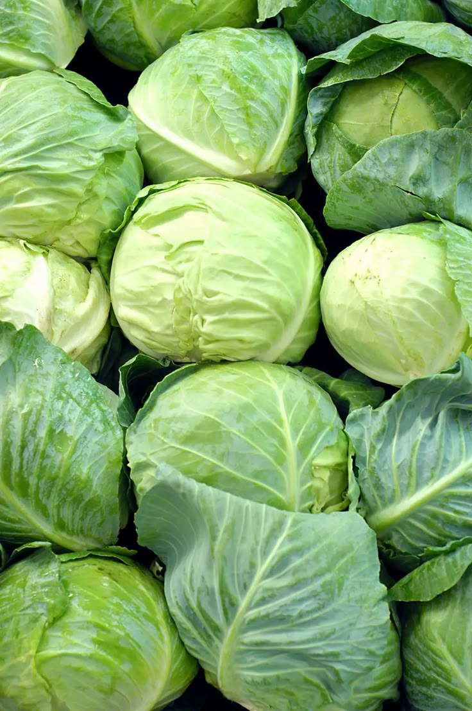

Cabbage Cultivation Guide

1. Land Preparation
Plow soil deeply, incorporate organic manure and compost.
Ensure good drainage to avoid waterlogging.
2. Seed Selection & Sowing
Select disease-resistant hybrid varieties.
Nursery sowing followed by transplanting after 25–30 days.
Spacing: 45 x 45 cm for main field.
3. Water Management
Maintain consistent moisture; avoid over-irrigation.
Drip irrigation recommended for efficiency.
4. Fertilization Schedule
Apply 20 tons FYM, 100:50:50 NPK per acre.
Split nitrogen dose into 2–3 applications.
5. Weed & Pest Management
Manual weeding or use of herbicides like Pendimethalin.
Pests: Aphids, Diamondback Moth — use neem-based sprays or appropriate insecticides.
Diseases: Black Rot, Downy Mildew — control with fungicides and crop rotation.
6. Investment Breakdown (Per Acre)
Input
Estimated Cost (INR)
Seeds
₹1,500 – ₹2,000
Fertilizers & FYM
₹4,000 – ₹5,000
Pesticides/Fungicides
₹2,000 – ₹3,000
Labor
₹10,000 – ₹12,000
Irrigation
₹2,000 – ₹3,000
Total Investment
₹20,000 – ₹25,000 per acre
7. Harvesting & Yield
Harvest after 90–120 days based on variety.
Yield: 200 – 250 quintals per acre.
8. Market Rate & Profit Estimation
Average price: ₹500 – ₹1,000 per quintal.
Returns: ₹1,00,000 – ₹2,50,000
Net profit: ₹80,000 – ₹2,25,000